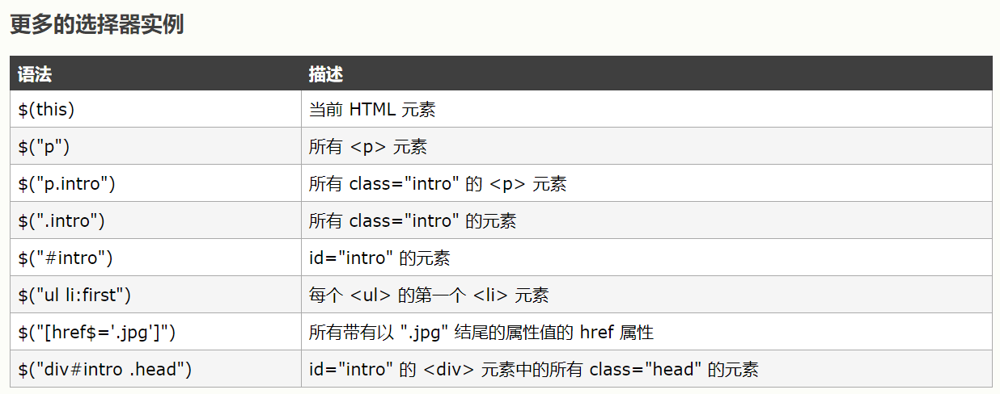
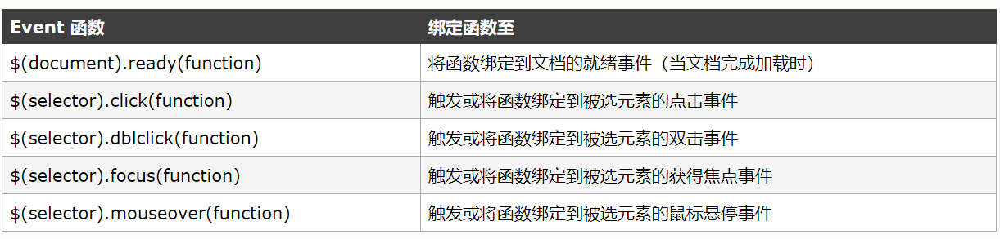

这是为了防止文档在完全加载（就绪）之前运行jQuery代码
This is a paragraph
jQuery 元素选择器和属性选择器允许您通过标签名、属性名或内容对 HTML 元素进行选择。
选择器允许您对 HTML 元素组或单个元素进行操作。
选择器允许您对 DOM 元素组或单个 DOM 节点进行操作。
jQuery 使用 CSS 选择器来选取 HTML 元素。
$("p") 选取 <p> 元素。
$("p.intro") 选取所有 class="intro" 的 <p> 元素。
$("p#demo") 选取所有 id="demo" 的 <p> 元素。
jQuery 使用 XPath 表达式来选择带有给定属性的元素。
$("[href]") 选取所有带有 href 属性的元素。
$("[href='#']") 选取所有带有 href 值等于 "#" 的元素。
$("[href!='#']") 选取所有带有 href 值不等于 "#" 的元素。
$("[href$='.jpg']") 选取所有 href 值以 ".jpg" 结尾的元素。
jQuery CSS 选择器可用于改变 HTML 元素的 CSS 属性。
This is a paragraph
This is another paragraph

jQuery 使用 $ 符号作为 jQuery 的简介方式。
某些其他 JavaScript 库中的函数（比如 Prototype）同样使用 $ 符号。
jQuery 使用名为 noConflict() 的方法来解决该问题。
var jq=jQuery.noConflict()，帮助您使用自己的名称（比如 jq）来代替 $ 符号。
这是一个段落
遵循以下原则使代码更易维护：
